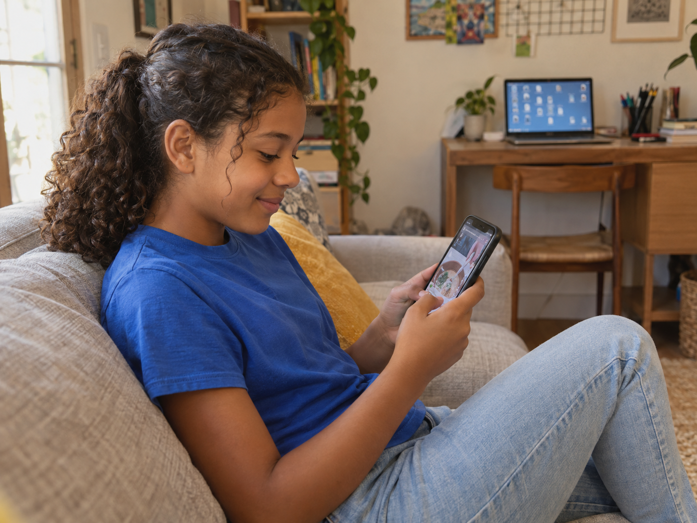
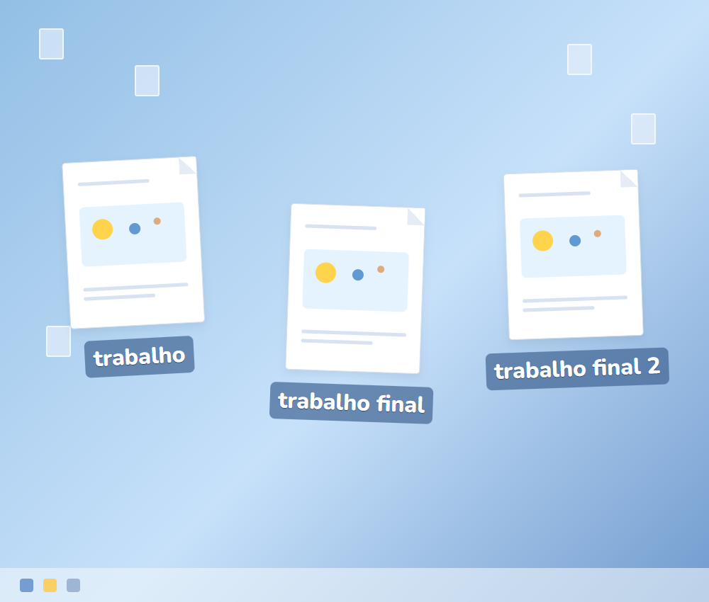
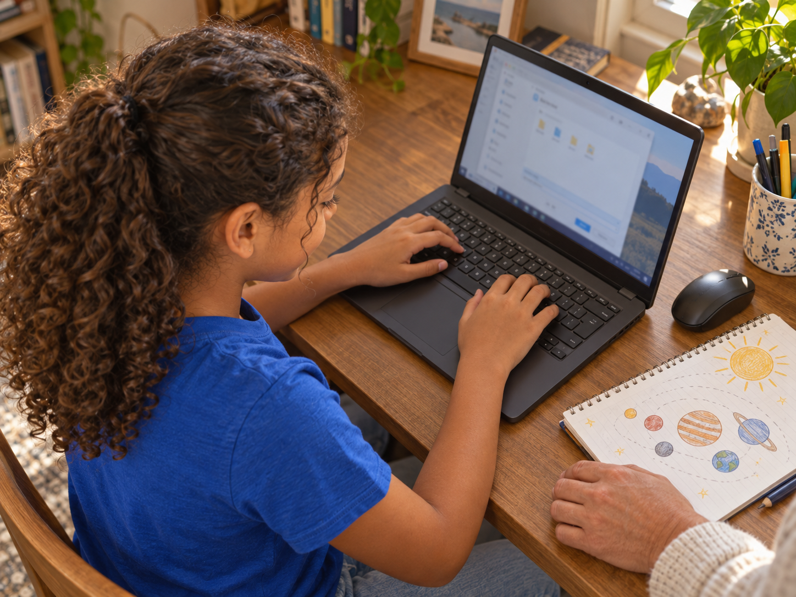
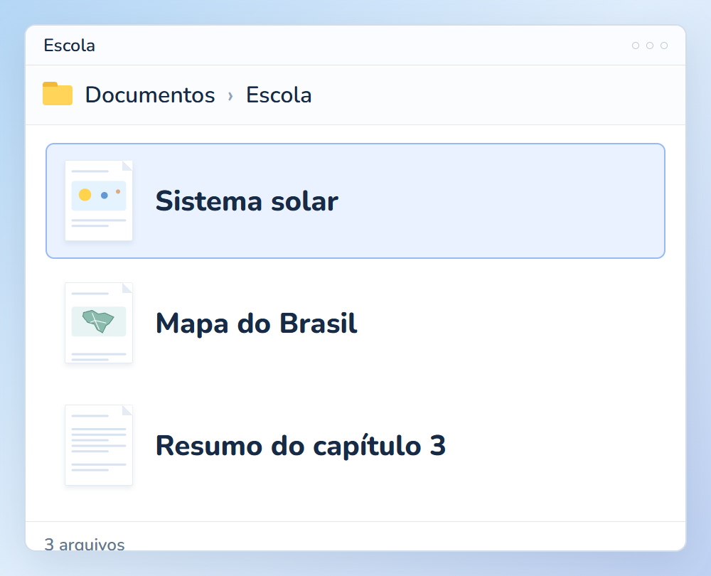
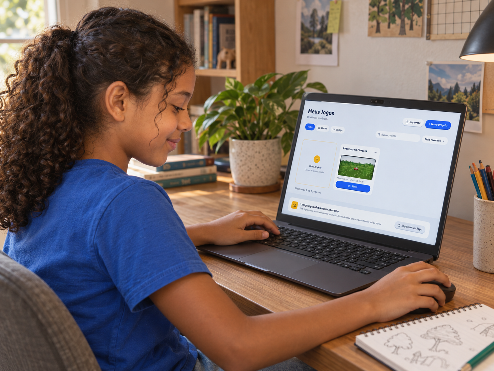
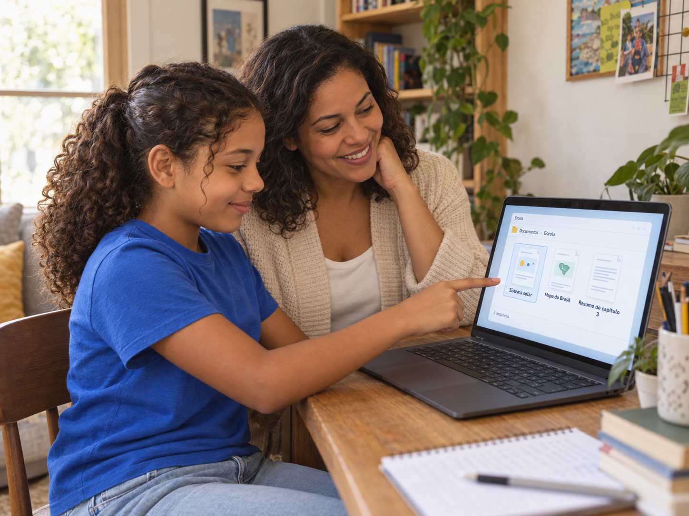

Por trás do jogo
Sua filha acha qualquer vídeo em dois toques.
Mas não acha o trabalho da escola que salvou ontem.

Sua filha acha qualquer vídeo em dois toques.
Mas não acha o trabalho da escola que salvou ontem.

Usar um aplicativo conhecido e organizar arquivos são tarefas diferentes.
Em muitos aplicativos, as fotos são guardadas automaticamente. Salvar um trabalho pede outras escolhas.
Ela precisa aprender a dar nome ao arquivo, escolher uma pasta e abrir o trabalho de novo.

São passos que vocês podem praticar juntos.
Peça para ela salvar um arquivo, fechar e encontrar de novo.

Observe em qual passo ela pede ajuda. Comecem por ele.
Combinem uma pasta para os trabalhos da escola e nomes fáceis de reconhecer.

“Sistema solar” conta mais sobre o arquivo do que “trabalho novo 2”.
Criar jogos dá um motivo para praticar o uso do computador.

Ela dá nome ao projeto, encontra o que salvou e volta para continuar a criação.
Conhecer o celular não dispensa aprender esses passos no computador.

Siga @criecomhelenaejulio para acompanhar o que sua filha pode aprender enquanto cria jogos.